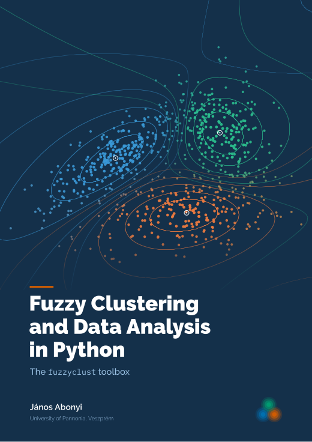

Open book · version 1.0 · November 2026
Fuzzy Clustering and Data Analysis in Python
The fuzzyclust toolbox
Fuzzy clustering assigns every observation a degree of membership in every group instead of
forcing it into one. This book develops the main families of fuzzy clustering algorithms in one notation and
shows, for each of them, how to run it in Python with the fuzzyclust package and how its parameters
change the result. Every figure of a computed result comes from an example script that opens in Google Colab.
Contents
- Preface
- 1Introduction
- 2Foundations of prototype-based clustering
- 3Hard and fuzzy partitioning algorithms
- 4Cluster validity and the number of clusters
- 5Visualization of fuzzy clustering results
- 6Robust and shape-oriented variants of fuzzy c-means
- 7Graph-based fuzzy clustering
- 8Clustering for model identification
- 9Clustering of time series
- 10Clustering relational, categorical, and mixed data
- 11Incomplete, very large, and image data
- 12Beyond a single unsupervised run: partial supervision, co-clustering, collaboration, and ensembles
- AAPI reference
- BMigrating from the MATLAB toolbox
- CThe example gallery
- Bibliography
© 2026 János Abonyi. This book is licensed under the Creative Commons Attribution 4.0 International License (CC BY 4.0, https://creativecommons.org/licenses/by/4.0/): it may be copied, redistributed, and adapted for any purpose, provided the source is credited. The fuzzyclust software described in the book is released under the MIT License.
Software: https://github.com/ComplexSystemsIntelligence/fuzzyclust
Documentation: https://complexsystemsintelligence.github.io/fuzzyclust
Installation: pip install fuzzyclust
Software DOI: 10.5281/zenodo.24543754
The research summarized in this book was supported by the National Research, Development and Innovation Office of Hungary (NKFIH) through the OTKA 143482 project.
This web edition is generated from the same LaTeX source as the PDF edition; equations, figures, and numbering follow the PDF. Every figure that shows a computed result was produced by an example script of the package.